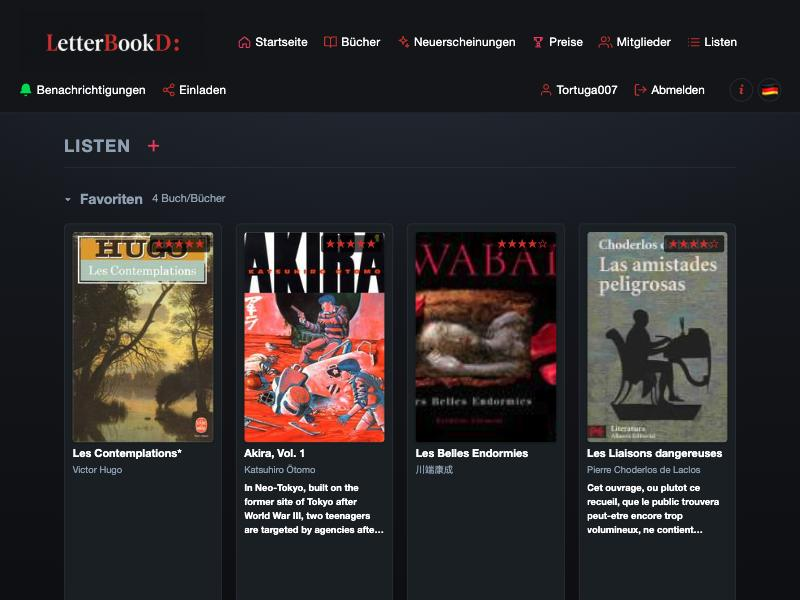

Listen
Wozu es dient: Deine Lektüren ordnen: Favoriten, Leseliste, bereits gelesene Bücher und alle thematischen Listen, die du anlegen möchtest (Genres, Themen, Lese-Challenges).

Ablauf
Drei Systemlisten sind immer vorhanden: „Favoriten“ (Herz), „Zu lesen“ (Warteschlange) und „Alle meine Bücher“ (alles, was du erfasst hast). Darauf folgen deine persönlichen Listen.
Jede Liste lässt sich über ihren Pfeil auf- und zuklappen, zeigt ihre Anzahl an Büchern und stellt die Bücher als Cover mit eingeblendeten Bewertungssternen dar. Über das „+“ oben erstellst du eine neue Liste.
Aktionsketten
Jede Zeile beschreibt einen Auslöser in der Oberfläche, das sich öffnende Modal/Formular und den erzielten Effekt.
| Auslöser | Modal / Felder | Effekt |
|---|---|---|
| Schaltfläche „+“ neben „Listen“ | Feld „Titel“ (max. 120 Zeichen). | Erstellt eine neue, leere Liste; sie erscheint sofort in der linken Spalte und kann über die Buchseiten gefüllt werden. |
| Pfeil vor einer Liste | — | Öffnet bzw. schließt die Liste. Es kann jeweils nur eine Liste geöffnet sein (name=„lists-acc“). |
| Papierkorb-Symbol neben einem Buch (in einer Liste) | Bestätigendes POST-Formular. | Entfernt das Buch aus der Liste. Das Buch bleibt im Katalog und in deinen anderen Listen. |
| Papierkorb-Symbol bei einer persönlichen Liste | Bestätigendes POST-Formular. | Löscht die gesamte Liste. Die Bücher selbst bleiben erhalten; nur die Liste verschwindet. Systemlisten können nicht gelöscht werden. |